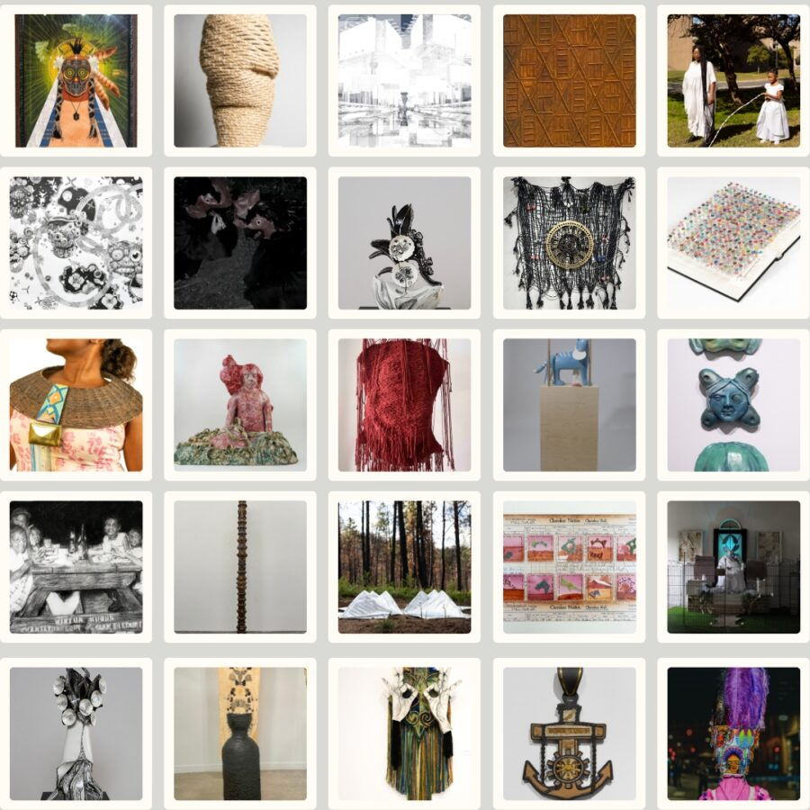

Ancestral Futures
Ancestral Futures
Curator: Donté K. Hayes
Opening Reception: Friday, February 6th, 5-8pm
What does it mean to be a good future ancestor? How might today’s personal, cultural, social, and or environmental actions become legacies for those who come after us? This juried exhibition, curated by artist and ceramicist Donté K. Hayes, shows works that meditate on wisdom, intentionality, and the responsibility of shaping a world that extends beyond ourselves.
Exhibiting Artists: Emmanuel Kstony Asamoah, Sarah Alsaied, Ronald Beckham, Laurie Buman, Tiffany Carbonneau, Geornica Daniels, Gabriela Espino, Yessenia Gerace, Julia Hechanova, Valerie Huhn, Annick Ibsen, Maya Jackson, Katie Kehoe, Eliot Kim, Jamie Kost, Boneger Oduro Kwarteng, Muyang Li, Hattie Mendoza, Sofia Mac Gregor Oettler, Mel Rosen, Stevia Roxanne, Jaelene Tatum, Max Trumpower, N. Dia Webb